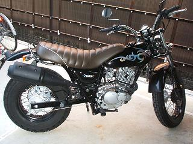
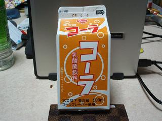
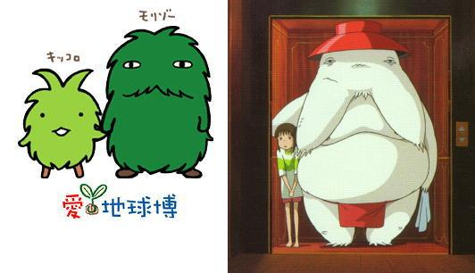

日々、想ふ
〜過去感じたことがつれづれと〜
（できるだけ最大化してお読みください）
日々、想ふ
ついに登場。３/３１
月末です、給料日なのが唯一の楽しみ、タケユキです。
昨日の日記でガクが書いたんだけど、
この春休みに二輪の免許取ってバイク買いました。
バンバン２００Zっていうバイクです。
下宿駐輪場にて撮影.
昨日京都へ行ったのもそうなんだけど
最近の移動手段はもっぱらバイクです。
バイト先の梅田にもバイクで通ってたりします。
ただ唯一の問題はまだ道を把握していないこと。
車も免許だけのペーパーだったのに、
地元の広島でも広くて３車線くらいなのに、
梅田の６車線の道路なんか大変、
右折したいだけなのに何回車線変更せんといかんのや。
今日の信条：とにかく事故にだけは気をつける。
そう言われても。３/３０
今日は京都に泊まりにきました。
この春休みよく京都に泊まりに来てます。
さんまさんちに泊まりにくるんだけど
今日はガクも泊まりにきてました、タケユキです。
***************************************************************
〜ガクの更新〜
甲子園行ってきたよ。９年ぶり２度目。
でも如水館負けちゃった。残念！
その後、さんまさん宅にてサッカー観戦。勝って良かったね。
銭湯にも行ったよ。タケユキのバイク（バンバン）の後ろに乗ってね。
最近のタケユキ：日記への情熱が足りない。
***************************************************************
ガクに日記が手抜きだって説教されました。
でもとりあえず飲んでるので寝ます。
今日くらいはこんな感じで勘弁してください。
今日のバイト：貸しきりだったんで楽。
バイトだから。３/２９
無理、寝る、タケユキでした。
今日の一言：なんか楽しいことないかなあ。
春だから。３/２８
地元から
ダニエルが遊びに来てました、
ダニエルは
こんなやつです、別に晒してるつもりはないですよ、タケユキです。
てなわけでお昼からダニエルと梅田をうろうろしてました。
天気がよかったら心斎橋辺りまで行こうかと思ってたんだけど
あいにくの曇り空、ぱらぱら雨も。
そんな外を歩き回る天気じゃなかったんで
一風堂でラーメン食ったりサンマルクカフェ行って
最近の情報交換したりしてました。
おかげで春休みの地元のことがいろいろ分かった。
国際的なお付き合いをしてる人がいるだとか、
ダニエルは新入生に出会いを求めてるだとか、
三丁目が日帰りくらいの予定で車で博多までラーメン食いに行ったとか。
アホか。
今日のバイト：もうしんどいんですって。
もういっぱいいっぱいです。３/２７
バイトで神経使うようになりました、
俺にそんなプレッシャーのかかる役をやらさんといてくれ、タケユキです。
というわけで今日は精神的にお疲れなので寝ます。
今日のバイト：失敗せんかドキドキ。
名は体を？３/２６
今日は８時間半労働でしたよ、今日から９連勤がスタートです。
俺に春休みの思い出を作らせないつもりですか？タケユキです。
今日は友達に乳酸菌飲料をもらった、
ヤクルトとかそれ系の飲み物のはずです。
炭酸なんてもってのほかの飲料のくせに

コーラて。
近くのコンビニに売ってるそうです。
今日のバイト：人が足らないんじゃないの？忙しすぎなんですけど。
こんなところでカミングアウト。３/２５
ケツメイシって漢方薬の名前なんですね、決明子って書きます、タケユキです。
書くの忘れてたけど今週の水曜日に
鈴木亜美
復帰第一弾、
「Delightful」がリリースされました。
さまざまな苦難を乗りこえ、ついに完全復帰、
ひと回りもふた周りも大きくなった鈴木亜美、
昔ファンクラブに入ってました鈴木亜美、
もう一度来い、アミーゴの時代。
今日のアミーゴ；めざましテレビのアミーゴとは違う。
堕落生活？３/２４
酒は飲んだら吐け、タケユキです。
というわけで久しぶりにサークルで飲み会。
飲んで横になってたら吐き気が来てトイレに行ったんだけど
たどり着く前に力尽きた。
唯一の救いはその友達の家のトイレがユニットだったこと。
的（便器）に届かなかった俺の分身はシャワーできれいに流されていきました。
んで帰ってきて洗濯物干して、
吐いて汚れた服洗濯機かけて部屋整理してたら今午前５時過ぎ。
やべ、目が冴えてきて眠れん。
今日の一言：ウイスキーは匂いがもうだめ。
レンタルビデオ。３/２３
「美しいあの花を薔薇と呼ぶことに決めたのは誰？
「薔薇と呼んでいる花を別の名前にしてみても美しい香りはそのまま」
ということで今日は映画「GO」のビデオを借りてきて見てました、
タケユキです。
「ロミオとジュリエット」のそのセリフが「GO」のテーマみたいなもんです。、
ちょっと前の映画で見たいと思ってたんだけど
なかなか見る機会がなくて今日やっと見てきました。
久しぶりにレンタルビデオショップに行ったら
見ようと思ってたけど結局見ないままになってる映画がけっこうたくさんあった。
春休みもまだけっこう残ってるし今のうちにいろいろ見とこ。
今日の気になった一作：「
茄子 アンダルシアの夏」。
たまには変わった所で。３/２２
最近メールより電話で用をすますことが多くなりつつあります、タケユキです。
今日はバイト前に友達と少し遊びました、業務スーパーで。
「おっこれ安っ！」
「これも安っ！」
とかそんな感じで買い物してさよなら。
これはこれでけっこう楽しい。
今日の天気：雨時々小雨。
日々是バイト。３/２１
明日はなんで雨やねん、タケユキです。
今日もバイトで１日おしまい。
今日宴会の予約でマクドナルドのなんたら店って名前で予約があった。
へえ〜マクドナルドの店員で飲みに来るんだなあと思ってたら
なんかちょっと様子が違う、
バイトの先輩に聞いてみたら
「なんか卒店式って形で予約になってたで」
っていう話を聞いた、バイトをやめる人たちの送別会みたい。
てか卒店なんて言葉を初めて聞いた。
それは普通はバイトをやめるって言うんじゃないのか。
そんな話をバイト終わってバイトの人と話をしてた。
「それにしてもバイトをやめる人らを送りだす会ってのできるのがすごいよなあ」
「そうよなあ、うちだったらバイトやめるって
言ったら送り出される会をするどころか
人足りてないのにふざけた事言うなよ
みたいな感じで
めっちゃ険悪な空気だわな（笑）」
ちょっとマックの店員っていいなって思った。
今日の食事：バイトのまかないのみで抑えています。
今日夜知ったこと。３/２０
今日の朝に九州ででっかい地震あったんだってね、タケユキです。
昼まで寝てて起きてさっき（夜の１２時）までバイト行ってたから知らなんだ。
明日もバイトみたいです、なんでこんな生活ばっかやってんだろ。
今日の肌天気予報：肌荒れのちひびわれ。
春休みの予定ほぼ決まり。３/１９
昨日、おとといの日記は断じて手抜きではありませんよ、タケユキです。
今日バイトへ行ったら４月のシフトが出てた。
手帳にその予定を書き込んでみたら、
学校始まるまでで何も用事のないオフの日が１日しか残ってませんでした。
まあその中の用事には遊びに行くとかって用事もあったりするんだけど
いかがなもんか。
あ、いまのとこ４月４日に広島帰って５日に大阪に戻る予定です。
・・１泊２日かよ・・。
今日の私信；ダニエル大阪来るなら
どこか案内しようか？時間が合えばだけど。
タケユキでした２。３/１８

モリゾー（愛☆地球博右）の目っておしらさま（千と千尋）の目じゃない？
今日の予定：狂ってちょいへこみ。
タケユキでした。３/１７
モリゾー（愛☆地球博右）って緑のムックじゃない？
今日の体調：雨降ってびしょぬれ。
公道デビュー。３/１６
こち亀読みながら更新中、タケユキです。
今日は用事で京都へ来てて、またさんまさんの家に泊まりにきています。
でも家主のさんまはなんかの用事があるってどこかにでかけるってんで
今家にはいません。
というわけでさんま宅にあるこち亀読書中。
その前にはさんまの原付に乗って京都の公道デビューしてきました。
以下尾崎豊の「十五の夜」のノリでお楽しみください。
か〜〜りたバイクで走り出す〜♪
行き〜さきも〜分からぬまま〜♪（俺は京都の道知りません）
暗〜い四条〜の通り〜♪
二段階右折が分からない〜♪
迷〜子になり〜ながらも♪
な〜んとか無事故でした 京都の夜〜♪
今日の確認事項：二段階右折は原則三車線以上の場合。